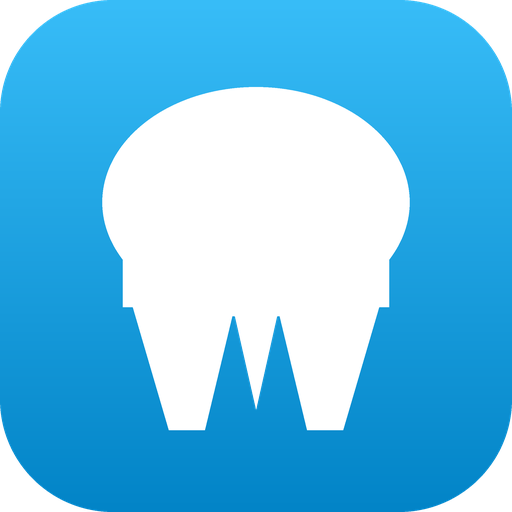
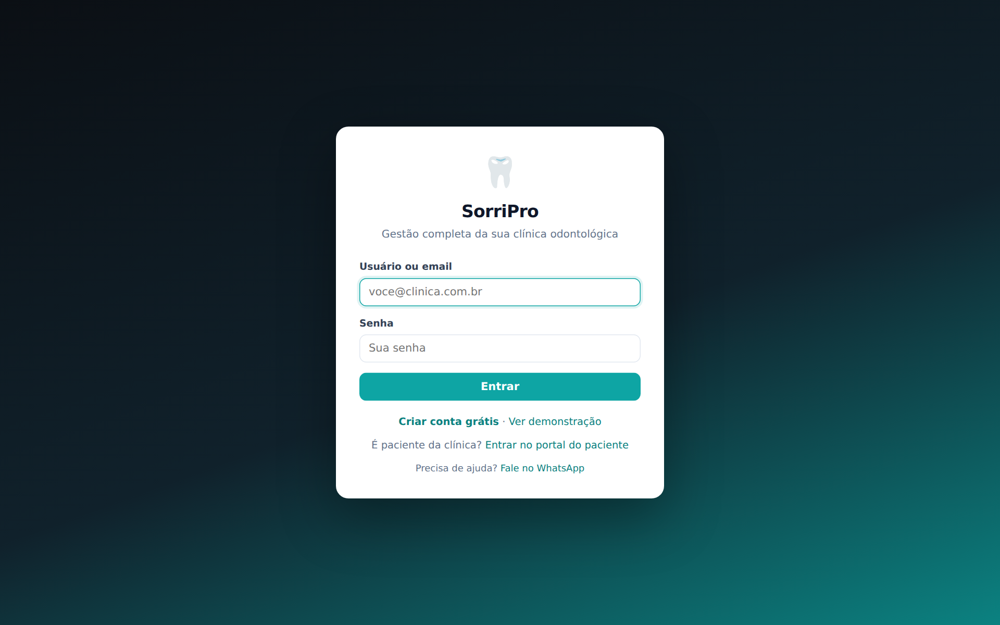
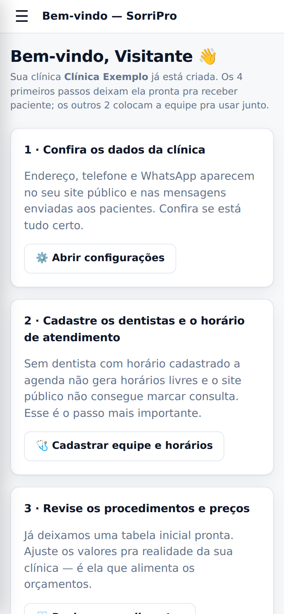
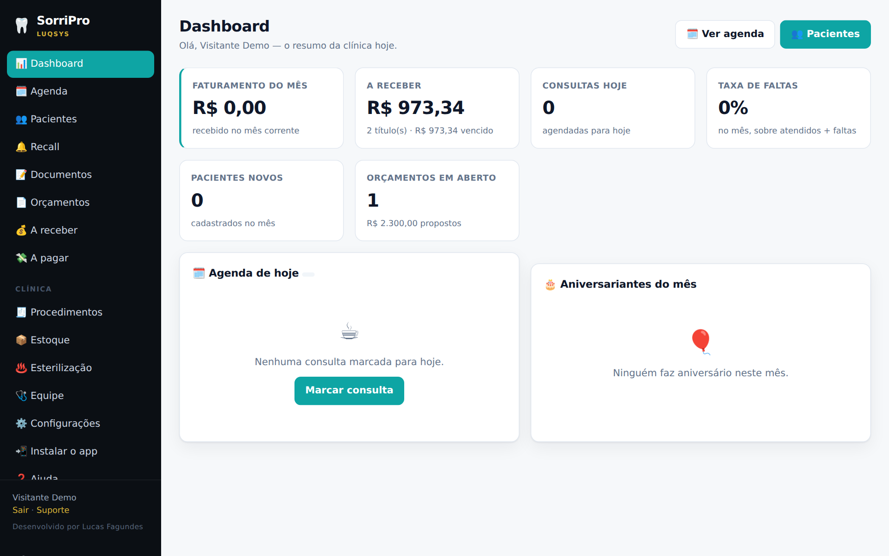
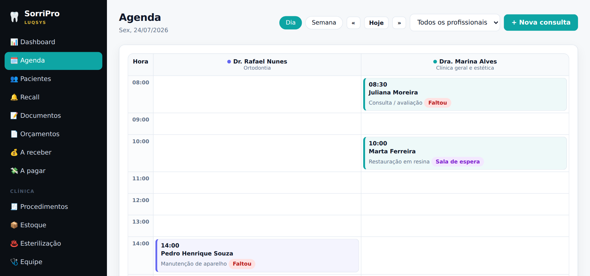
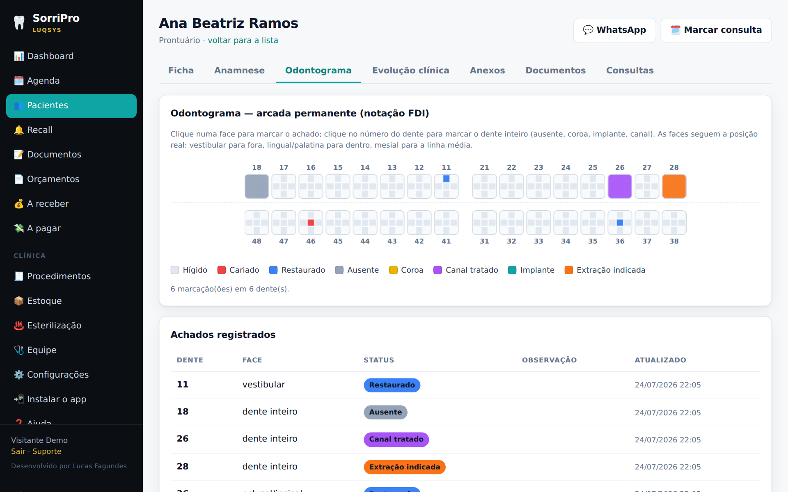
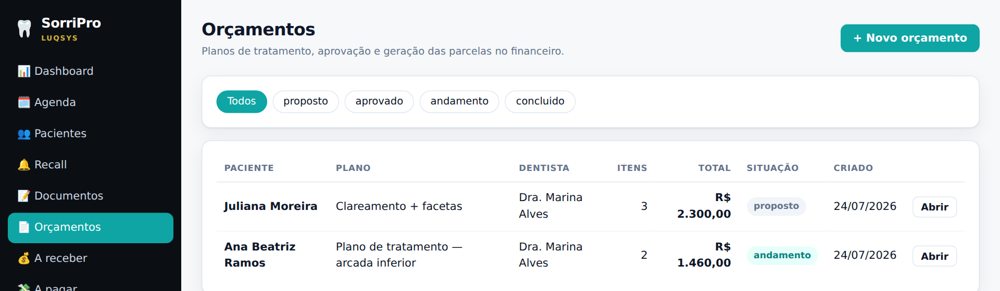

SorriProDo primeiro acesso até a clínica rodando: o que cada tela faz, a ordem de configurar e as dúvidas mais comuns.
No navegador do celular ou do computador: sorripro.luqsys.com.br
O login é o e-mail do cadastro ou o usuário que a clínica criou pra você (ex.: "maria").
Peça pro Admin da clínica: ele define uma nova em Equipe → Usuários da equipe → Editar. Se você é o dono da conta, toque em Fale no WhatsApp na tela de entrada.
No menu, abra 📲 Instalar o app e siga o passo a passo do iPhone ou do Android. O SorriPro fica com ícone na tela inicial, igual um aplicativo.

No primeiro acesso o sistema abre a tela de boas-vindas, com 6 passos. Os 4 primeiros deixam a clínica pronta pra receber paciente:
Nome, CNPJ, responsável técnico, logo, telefone, WhatsApp e endereço. Aparecem no site da clínica e nos documentos impressos.
Cada dentista com CRO, cor na agenda e horário de atendimento. É o passo mais importante: sem horário, a agenda não mostra vaga.
Já vem uma tabela inicial. Ajuste preço e duração.
Copie o link e coloque na bio do Instagram, no Google Meu Negócio e no WhatsApp. O paciente pede o horário sozinho, 24h por dia.
Um login pra cada pessoa, com o perfil certo (Equipe).
Pra você e pra cada pessoa da equipe.
Depois toque em Começar a usar o SorriPro. Dá pra rever esses passos quando quiser pela Ajuda.

O resumo do dia: agenda de hoje, aniversariantes do mês, faturamento do mês, quanto há a receber, consultas de hoje, taxa de faltas, pacientes novos e orçamentos em aberto.


Em Pacientes → + Novo paciente, só o nome é obrigatório. Clique no paciente pra abrir o prontuário:
| Ficha | Dados cadastrais, responsável pra menor, convênio, contato de emergência. |
| Anamnese | Alergias, medicamentos, doenças, pressão, gestante, fumante. A alergia vira alerta vermelho no topo do prontuário. |
| Odontograma | Numeração FDI (11 a 48), por dente e por face: cariado, restaurado, ausente, coroa, canal tratado, implante, extração indicada. |
| Evolução clínica | O que foi feito, dente e face, dentista, valor e data. Vinculada a uma consulta, marca a consulta como atendida. |
| Anexos | Radiografia, foto, documento e atestado (até 5 MB) ou link externo. |
| Documentos e Consultas | Receitas e atestados emitidos pro paciente, e o histórico de consultas. |


| 🔔 Recall | Quem passou da hora de voltar e ainda não tem consulta. A fila monta sozinha (intervalo em Configurações → Recall), mas o aviso só sai quando a clínica toca em Avisar. |
| 📝 Documentos | Receituário, atestado, orientações e encaminhamento, a partir de modelos. Sai em A4 com o cabeçalho da clínica e o CRO do dentista. Antibiótico em 2 vias. |
| 📦 Estoque | Material com lote e validade, alerta de mínimo e de vencimento. A saída tira do lote que vence primeiro. A compra pode já gerar a conta a pagar. |
| ♨️ Esterilização | Ciclos da autoclave com testes químico e biológico e validade do pacote. Lista imprimível pra vigilância. |
| 🩺 Equipe | Admin faz tudo. Gerente toca a clínica sem abrir prontuário. Dentista atende, sem mexer em preço, financeiro nem equipe. Recepção cuida de agenda, cadastro e financeiro, sem prontuário. Dá pra ajustar cada permissão. |